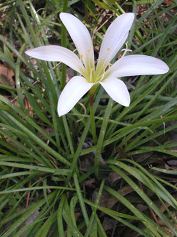

Previous || Next || Return to Mystery Plants || USC Herbarium
This Week's Mystery Plant | Dr. John B. Nelson Curator, USC Herbarium |
|
The amaryllis family is a huge group of herbaceous species, frequently developing large bulbs, and mostly tropical. Many of these species have very showy flowers, and have become highly popular with growers and gardeners. Included in this family are the familiar amaryllis, daffodils, crinums, milk-and-wine lily, spring snowflake, and spider lilies. Interestingly, there is a lot of disagreement amongst modern botanists as to the relationship of the amaryllis family and the true lily family. One current trend is to combine both the amaryllis and lily families into one super family of several thousand species. This week's Mystery Plant is a native member of the "old" amaryllis family, a species that may be found growing from Mississippi to Florida, and as far north as Maryland. It arises from a deep bulb, and produces a tuft of shiny green, grass-like leaves which are a foot or so long. (To me, the leaves feel like plastic.) The flowers are slightly fragrant, and produced singly on a long, hollow stalk. Each flower is perfectly star-shaped, with six brilliant white perianth parts. Inside are the six bright yellow anthers, each atop a slender filament. The flower points straight up, rather than leaning. The flowers commonly become pink, or reddish, as they age. Eventually, a seed pod (capsule) is formed, which contains a number of black seeds. This species is blooming now, and is reasonably common throughout South Carolina, although it may be most frequently seen in the low country. It likes damp, shady places, and is a wonderful sight in the spring, frequently in spectacular displays, especially with a backdrop of golden butterweed and red buckeye. |
 Photo by Linda Lee |